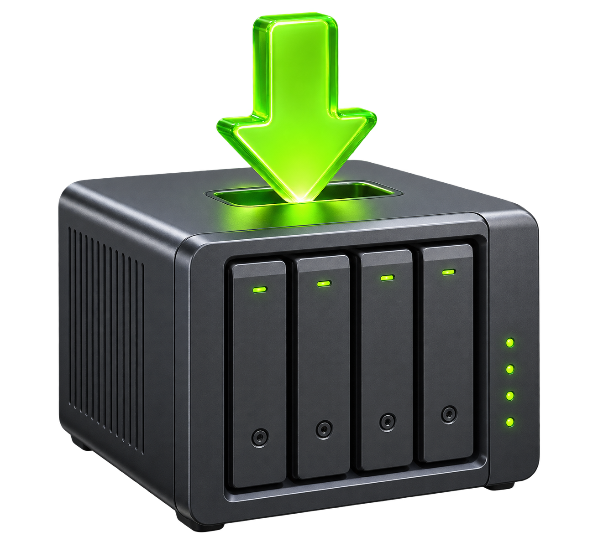
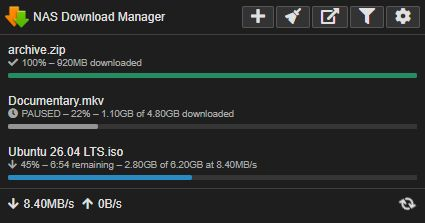

FROM BROWSER STRAIGHT TO NAS
Send downloads.
Skip the detour.
Right-click links, paste URLs, or add magnet links—then choose exactly where they land on your NAS.

CONTROL WITHOUT THE TAB HUNT
Everything downloading.
Right in the toolbar.
See progress at a glance, filter the queue, and pause, resume, or remove tasks without opening DSM.
- 01 Pause and resume tasks
- 02 Choose destination folders
- 03 Get completion notifications

NAS
Download
Manager FOR SYNOLOGY
Download
Manager FOR SYNOLOGY